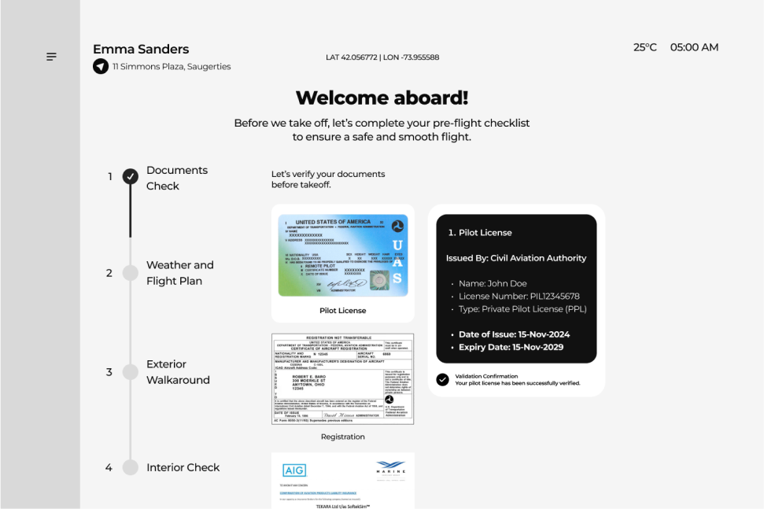
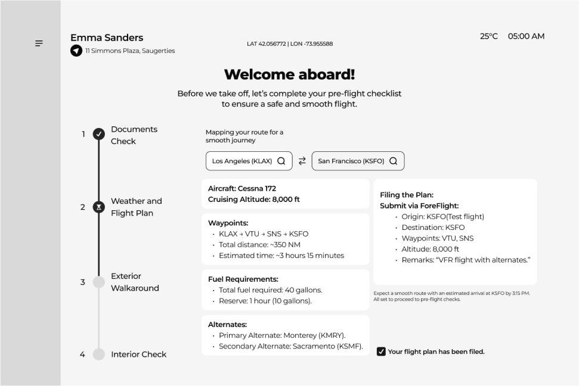
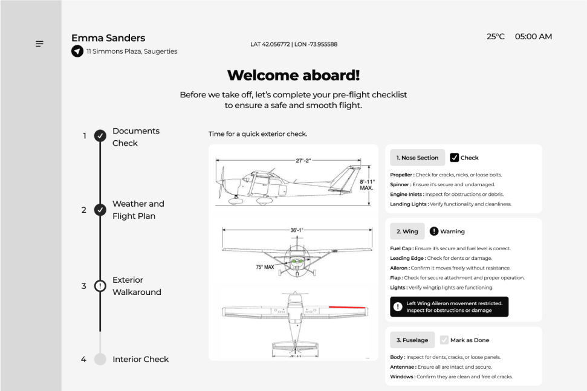
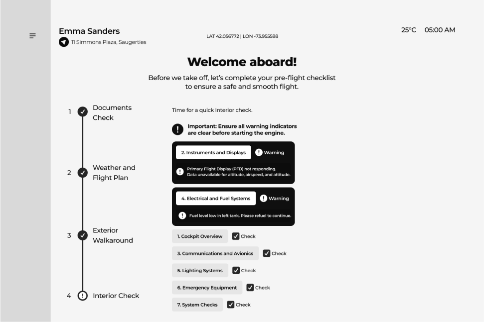
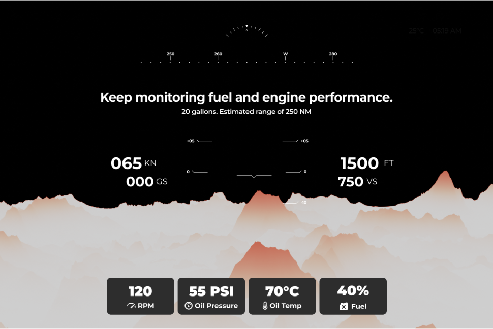
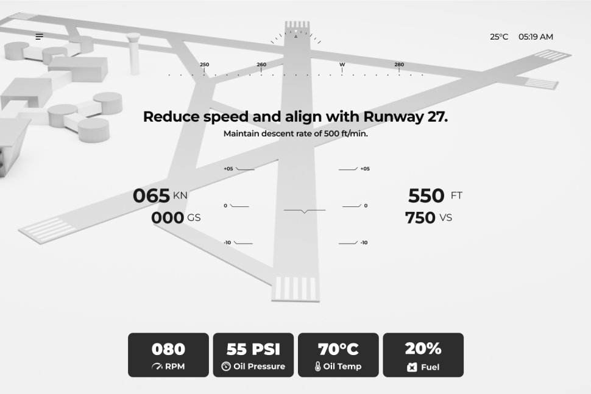

Gestalt principles to group related data (e.g., speed + altitude).
Redefining the Cockpit for
Next-Gen Aviation.
Consultant FY 2024-25

Flying small aircraft can feel complex and intimidating, especially for those without extensive training.
The challenge is to create a cockpit dashboard that simplifies the experience, minimizes cognitive load, and ensures safety, making flying as intuitive as driving a car.
Why We Built This
Our goal is to bridge the gap between technology and human usability, empowering people to confidently explore the skies.
Our Focus Area
Clean UI, low cognitive load, safety, and minimal training requirements.
How We Built This
- We started by understanding the needs of modern flyers, particularly those with minimal aviation experience.
- Through extensive user research, we identified key pain points, such as information overload and complex controls. Using a user-centered design approach, we developed a clean, clutter-free dashboard with intuitive navigation, clear visuals, and adaptive guidance.
Our Solutions
- We designed a next-gen aviation dashboard that simplifies flying, focusing on intuitive controls, minimal clutter, and real-time guidance.
- Built with advanced safety standards, it empowers even inexperienced users to fly confidently while ensuring a seamless and enjoyable aviation experience.
- The interface displays only essential information, reduces cognitive load.
The User interface
Our top priority is pilot safety, which is why we begin with thorough user document verification and pre-flight checkups.
Pre-Flight
A streamlined process to ensure safety and readiness before takeoff. From reviewing weather and flight plans to performing detailed interior and exterior inspections.
1. Documents Check 
2. Weather & Flight Plan:
Review conditions and routes for a safe, efficient flight. 
3. Exterior Walkaround:
Inspect the aircraft's exterior for safety and readiness. 
4. Interior Check:
Verify instruments and controls for a secure flight experience. 
Main Screens
Experience a seamless flight with essential stats at a glance. Our intuitive dashboard keeps you informed about altitude, speed, and navigation while reducing distractions, ensuring a safe and enjoyable journey.


Smart Alert System
We designed an intuitive alert system that prioritizes safety before takeoff. It highlights critical issues with clear visual cues and actionable prompts, ensuring no step is overlooked.
From system diagnostics to final checks, every alert is crafted to guide users seamlessly while minimizing stress and confusion.
Literature Reviews
To create a cutting-edge digital dashboard for general aviation aircraft, we conducted a thorough review of relevant literature.
- Key Insight: Clear visual hierarchy and intuitive layouts reduce cognitive load and enhance situational awareness, minimizing pilot errors.
- Reference: Wickens, C. D. (2008). Aviation Psychology and Human Factors.
1. Human Factors in Aviation Design
- Key Insight: Tiered alerting systems (advisory, cautionary, critical) ensure pilots respond appropriately without experiencing alert fatigue.
- Reference: FAA Human Factors Guidelines for Flight Deck Design (2017).
2. Safety-Critical Systems and Alert Mechanisms
- Key Insight: Augmented reality (AR) and AI-driven analytics enhance navigation, situational awareness, and predictive decision-making.
- Reference: Advances in Artificial Intelligence for Aviation (AIAA, 2020).
3. Emerging Technologies in Aviation
Expert Interview
One of the highlights of this project was interviewing 15+ pilots, aviation engineers, and human factors specialists. Their insights into real-world challenges shaped our design approach.
Working in sprints, we synthesized these findings through affinity diagrams, ensuring our cockpit interface is intuitive, user-friendly, and aligned with safety standards.
“As a pilot, I find the lack of training, steep learning curve, and complex systems concerning for safety.”
By simplifying complex operations and offering clear, real-time feedback, we’re making aviation safer and more accessible for everyone.
Challenges
- Creating a system that is feature-rich yet simple enough for users with varying experience levels.
- Catering to both experienced pilots and newcomers with different preferences and levels of expertise.
- Designing an intuitive interface that minimizes the steep learning curve for new pilots.
Takeaways
- Prioritize ease of use and clarity to reduce cognitive load, especially for pilots unfamiliar with digital systems.
- Constant user feedback through interviews and testing is crucial to refine the interface and ensure it meets real-world needs.
- Offer options for different user needs, from experienced pilots to beginners, ensuring the system is adaptable and future-proof.